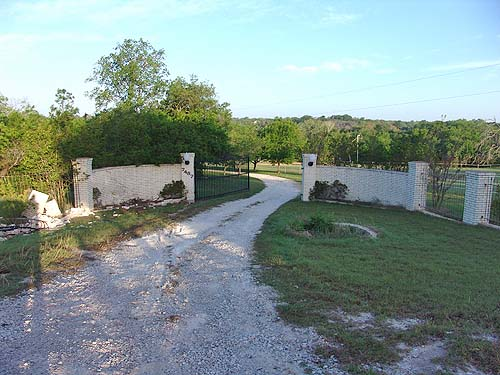
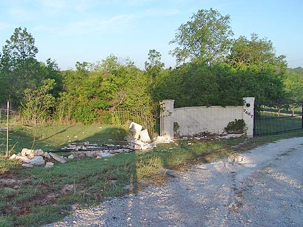
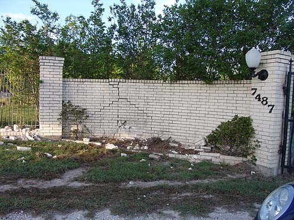
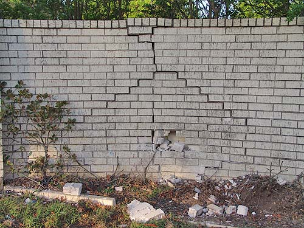
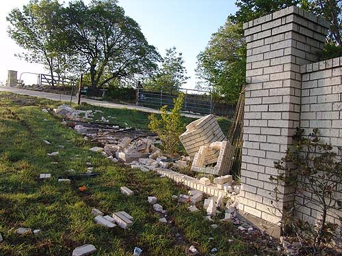

Our entryway damage
Our entryway got in someone's way at
3 AM Friday night. They came back the
next
day to give us insurance info (no one
was hurt).
Now we need to find out about getting
it fixed.

A wide shot. The left side should
look like the right side.

Unfortunately it doesn't.

The large brick section also got struck.

We guess this is where the car finally
ended up.

2 or 3 columns down and the wrought
iron pretty twisted. It looks like they crested the hill going fast and
had no way to stop. We figure they drove through/over that one side and
then spun around and hit the large wall with the back end of the car.